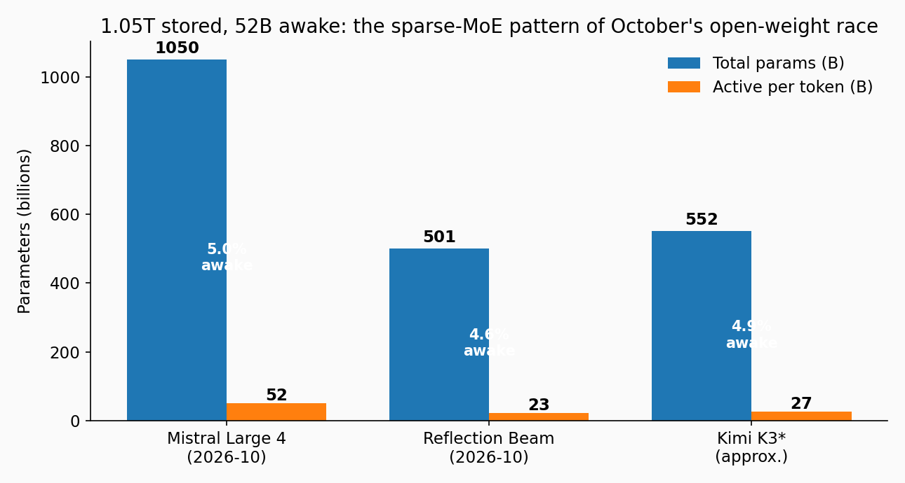
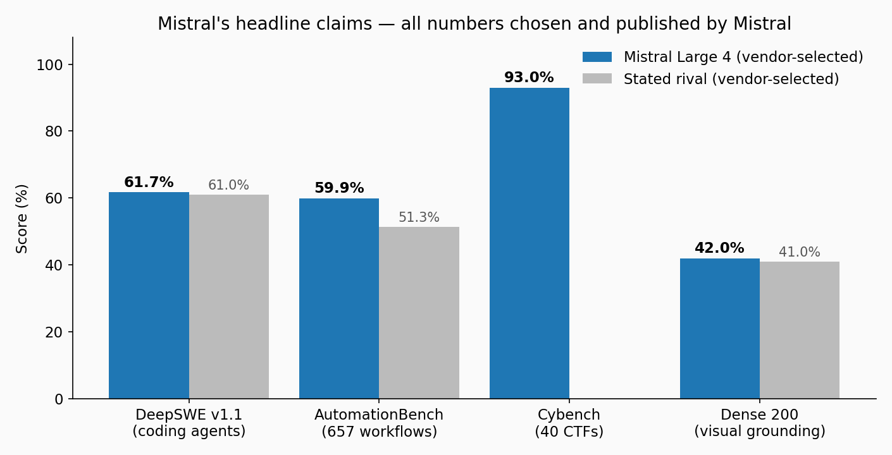
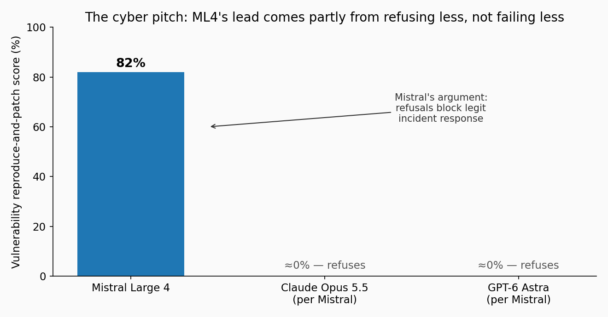
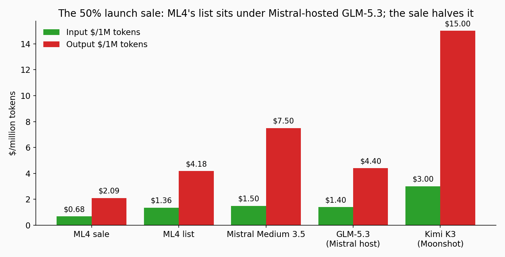

On October 6, Mistral AI previewed Large 4 — nicknamed "le Chonk" — a trillion-parameter, natively multimodal mixture-of-experts model trained on 3,800 Grace Blackwell GPUs in Europe. Only 52B parameters wake up per token. The weights ship by the end of October. The story isn't the size — it's the pitch: security work that closed models refuse.
The week the open frontier got French
October's open-weight race has a rhythm: Reflection Beam landed October 5 (501B total, 23B active), and one day later Mistral Large 4 previewed at 1.05 trillion total parameters with 52B active — the largest open-weight model announced in Europe, trained end-to-end in Mistral's own European datacenters. The API preview is live now; the weights (license still unpublished) are promised by end of October.
The headline numbers, from Mistral's model card:
| Spec | Mistral Large 4 |
|---|---|
| Architecture | Granular mixture-of-experts, hybrid instruct + reasoning |
| Parameters | 1.05T total, 52B active, 1.6B vision encoder |
| Modalities | Text + image in, text out |
| Context | 1M on the model card; 524K on the served preview |
| Reasoning | Adjustable reasoning_effort (preview: none and high) |
| Training | From scratch on 3,800 NVIDIA Grace Blackwell GPUs, 160+ languages |
| Pricing | $1.36/$4.18 per 1M in/out at list; 50% launch sale → $0.68/$2.09 (no end date given) |
One wrinkle the launch-day coverage caught: several outlets first reported 49B active; the model card now says 52B and 1.05T total. Use the card's numbers — and plan around 524K context until Mistral's own endpoint proves 1M.

ELI5: why "52B awake" decides the bill, not the "1.05T" label
A mixture-of-experts model is a stadium full of specialists with a bouncer at the door. For each token, a router picks which few experts handle it; the rest sleep. So:
- The 1.05T sets memory, not compute. You must hold the whole model: roughly 1 TB at 8-bit precision, ~525 GB at 4-bit — multi-GPU server hardware, not a workstation. When the weights land at month end, this number decides your hardware bill.
- The 52B sets compute and roughly the price. Inference cost scales mostly with active parameters. Serving ML4 costs like a ~52B model, with the knowledge capacity of a trillion-parameter one — if the sparsity holds up.
That last clause matters. Sparse MoE works when the router keeps picking the right experts. A 4.95% activation ratio is standard territory now (Beam: 4.59%, Kimi K3: ~4.9%) — the industry converged on "about 5% of the brain awake" as the price/performance sweet spot.
How it works: the three numbers that decide whether you care
1. The coding-agents number: 61.7% on DeepSWE v1.1. That edges GLM-5.3's 61%. But the honest comparison is the human one: on Surge AI's blind coding ratings (1–5), ML4 scored 3.74 — ahead of Kimi K3 (3.59) and GLM-5.3 (3.60), but nearly half a point behind Claude Opus 5 at 4.22. Vendor-selected numbers all; still, the gap to closed frontier is visible in Mistral's own chart. AutomationBench (657 business workflows): 59.9%, ahead of the Chinese open models listed.
2. The vision number: 42% on Dense 200 (visual grounding). Visual grounding — pointing at which pixels answer the question — is ML4's best relative claim: it edges GPT-6 Astra's 41%. For documents, charts, and engineering drawings, this is the row to watch.
3. The security number: 82% on the reproduce-and-patch test in the Artificial Analysis Cyber Index — the highest of any model, where Mistral says Claude Opus 5.5 and GPT-6 Astra score near zero because they refuse the task. Cybench (40 CTF-style challenges): 93%. Lakera B3 attack resistance: 93.3%, the highest Mistral measured.

The real story: "refusals are a security risk"
Read the cyber headline carefully, because Mistral's argument is genuinely interesting — and genuinely debatable:
Losing access to a tool partway through an incident can itself become a security risk. Self-hosted open weights let organizations run security work under their own policies.
The thesis: closed models' provider-level refusals can block legitimate vulnerability research and incident response. Mistral is red-teaming ML4 with cybersecurity leaders, vetted partners, and state authorities — who, Mistral says, get the model "with reduced moderation and expanded cyber capabilities." The offensive-use question is obvious (one HN commenter flagged it immediately), and Mistral's answer is that the work happens either way; the only question is whose hands the tool is in.
The honest reading of the 82%: part of that lead comes from refusing less, not failing less. Treat it as a capability-plus-policy score, not a pure capability score.

The independent check (Artificial Analysis, measured on the preview API): Intelligence Index 38 — above the median 26 for its price class, but Simon Willison's verdict is blunt: Mistral is "about 6 months behind the frontier," a big jump from Large 3 (which scored 9). Speed: 116.1 tokens/s, well above the 74.6 median — genuinely fast. The tax: verbosity. AA measured ML4 producing ~200M tokens on the index versus an 81M median — about 2.5× the output tokens. Per-token prices lie when the model writes 2.5× as much.

The economics: a sale before the weights commoditize the model
ML4's list sits just under Mistral-hosted GLM-5.3 ($1.40/$4.40); the sale is half that. But watch what happened to Kimi K3 after its weights shipped: AI Gateway went from one host to 17 providers, input prices falling from $3 to $0.45. Once ML4's weights land, third-party hosts will undercut Mistral's own API on the same model — Mistral's 50% sale looks partly like anchoring the reference price before the competition arrives.
The weights-day checklist (end of October)
When the checkpoint drops, check in this order:
- The license — Apache 2.0, a Mistral research license, or custom decides commercial use, fine-tuning, and redistribution.
- Which build shipped — co-founder Guillaume Lample says the RL run is still going; the downloadable "final version" may differ from today's preview.
- Precision and size — ~1 TB at 8-bit. Plan the hardware.
- Day-one serving — vLLM / SGLang / llama.cpp support for the architecture.
- Context — does the open checkpoint honor 1M, or the 524K the preview serves?
- Independent evals — re-run your own repo tasks; wait for Artificial Analysis to re-score.
Takeaways
- 1.05T total / 52B active: memory scales with the big number, compute with the small one. That's the entire MoE bargain.
- Best open-weight model built outside China on vendor charts — but every headline number is vendor-selected. Independent signal says ~6 months behind closed frontier, and human evals still favor Opus-class models for coding.
- The security pitch is the real differentiator: 82% on reproduce-and-patch, with the explicit thesis that refusals block legitimate defense. Whether that's responsible or reckless is the debate October should have.
- Budget at list price, expect verbosity: 2.5× median output tokens erases per-token savings fast.
- The event isn't the preview — it's month end. License, build, precision, and host competition decide what "open" actually costs.
Benchmark figures are Mistral's self-reported selections (Oct 6, 2026); independent figures from Artificial Analysis and Simon Willison's notes, as collated October 9, 2026. Treat vendor numbers as the opening bid, not the verdict.